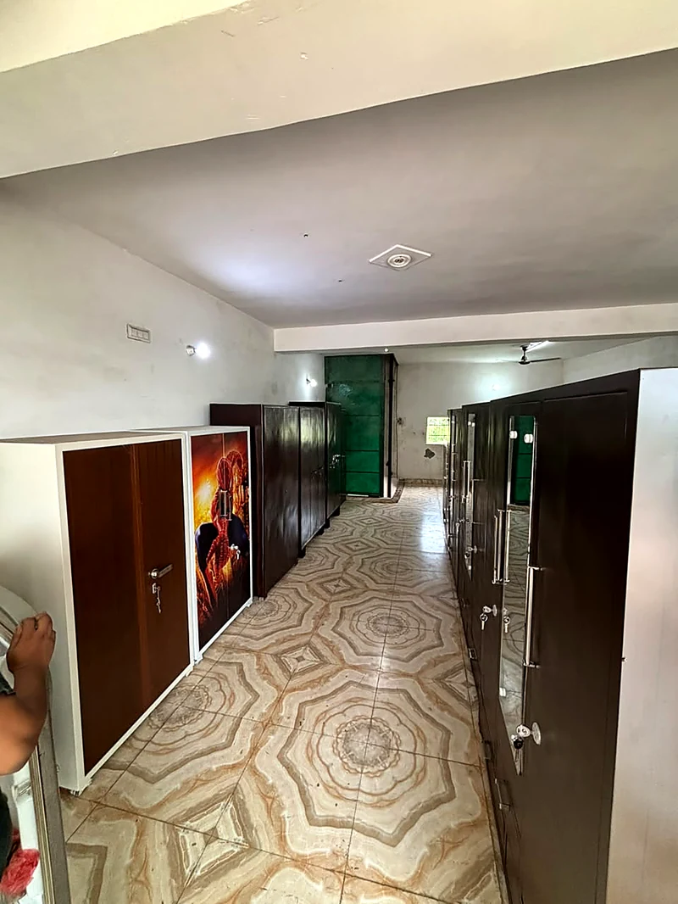
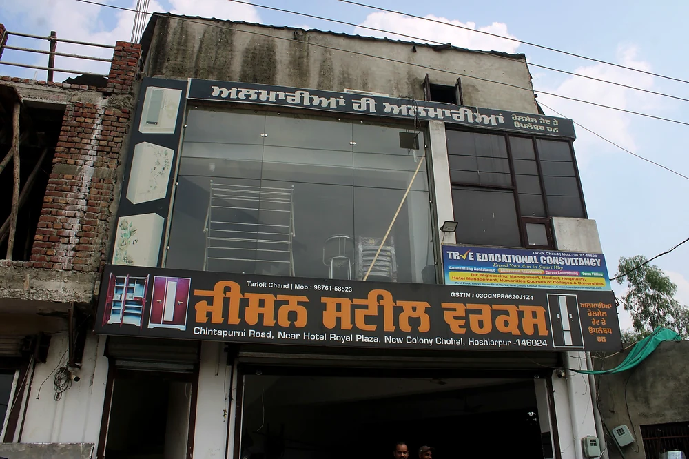

Engineering mindset
Strong technical depth in design, development, and manufacturing processes.
SANKALP, a product of Jesan Steel Works, combines quality craftsmanship, modern technology, and customer-focused service to create durable, stylish, and reliable steel furniture solutions for homes, offices, and commercial spaces.


Founder and Managing Director (Jesan Steel Works)
Er. Tarlok Chand graduated in Mechanical Engineering in 2004 and further enhanced his technical expertise by earning a professional certification in CAD/CAM Design Technology.
With over 16 years of experience in the automotive industry, Mr. Tarlok Chand has built a strong foundation in engineering design, product development, manufacturing processes, and marketing. His extensive technical knowledge, combined with practical industry experience, has enabled him to understand customer requirements and deliver innovative, high-quality solutions.
Driven by a passion for manufacturing and entrepreneurship, he established Jesan Steel Works in 2018 in Hoshiarpur, Punjab. Under his leadership, the company has grown into a trusted name in the steel furniture industry.
His vision is to combine quality craftsmanship, modern technology, and customer-focused service to create durable, stylish, and reliable steel furniture solutions that meet the evolving needs of homes, offices, and commercial spaces.
Today, he continues to lead Jesan Steel Works with a focus on excellence, customer trust, and delivering steel solutions that meet the highest standards of quality and durability.
Strong technical depth in design, development, and manufacturing processes.
More than 16 years of practical automotive and manufacturing industry exposure.
A clear focus on quality craftsmanship, innovation, and customer satisfaction.
Jesan Steel Works is a trusted name in the steel furniture and fabrication industry and Established in 2018, committed to delivering high-quality, durable, and customized steel solutions. With a focus on superior craftsmanship and customer satisfaction, we manufacture products that combine strength, functionality, and modern design.
We specialize in steel almirahs, wall-fitted almirahs, customized steel wardrobes, storage cabinets, office steel furniture, steel racks, lockers, and all types of steel fabrication work.
Every product is manufactured using premium-quality steel and finished with advanced Enamels for long-lasting durability, corrosion resistance, and an attractive appearance. Customized wall-fitted steel almirahs are designed to maximize storage space while seamlessly blending with your interiors.
At Jesan Steel Works, we understand that every customer has unique requirements. That's why we provide tailor-made designs, precise measurements, professional installation, and reliable after-sales support. Whether it's for homes, offices, schools, hospitals, or commercial spaces, our products are built to deliver security, convenience, and long-term value.
We offer high-quality UV printed doors for steel almirahs, allowing customers to choose from a wide range of elegant, modern, and customized designs. Our UV printing technology produces vibrant, scratch-resistant, and long-lasting finishes that enhance the appearance of steel furniture and complement any interior.
Driven by quality, innovation, and timely service, Jesan Steel Works continues to build lasting relationships with customers by offering dependable steel furniture solutions at competitive prices.


From premium steel almirahs to customized fabrication work, every product is developed to offer durability, utility, and a clean modern look.
Steel almirahs, wardrobes, office steel furniture, storage cabinets, racks, and lockers.
Customized wall-fitted steel almirahs designed to maximize space and match interiors.
Premium-quality steel with advanced enamel finishes for durability, corrosion resistance, and attractive appearance.
Elegant, modern, and customized UV printed doors with vibrant, scratch-resistant, long-lasting finishes.
Precise measurements, professional installation, and reliable after-sales support for every customer.
Built for homes, offices, schools, hospitals, and commercial spaces with security, convenience, and value.
Visit the showroom, explore the product range, or start a direct enquiry for customized steel furniture and fabrication work.